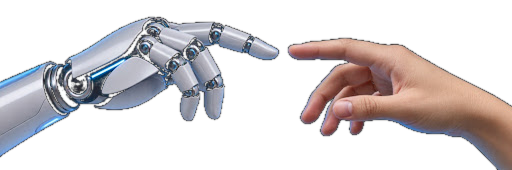
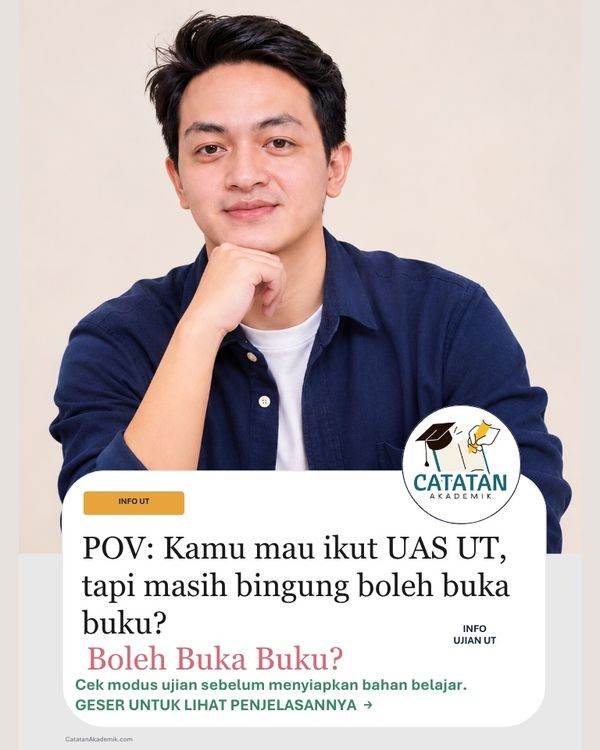
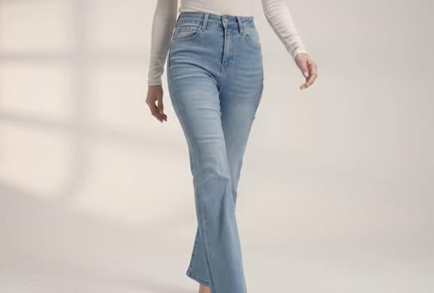

Merancang, membangun, dan menjalankan sendiri bot WhatsApp otomatis, alur produksi video AI teraudit, serta ekosistem web — dari rancangan sampai live di production.
Lihat Karya →Unduh CV ↓Membangun situs web, bot WhatsApp, dan alur kerja berbasis AI yang dipakai dalam penggunaan nyata, dengan dasar 12+ tahun memimpin operasional.
Kebutuhan yang masih dikerjakan manual saya ubah menjadi sistem yang berjalan sendiri, dari ide, konten, sampai server.
Enam bidang yang saya kerjakan, tergantung di rel galeri. Klik atau tekan Enter pada sebuah bingkai untuk membaca rincian apa saja yang dikerjakan.
Proyek yang berjalan. Klik kartu untuk melihat detail dan videonya.
Pesanan dan grup pelanggan ditangani otomatis lewat bahasa natural, berjalan tiap hari di VPS.

Platform edukasi UT yang sudah menangani ribuan pesanan tugas dan diskusi mahasiswa.

Kumpulan video iklan dan konten yang dibuat penuh dengan AI, dari naskah sampai render final.
Routing otomatis ke Hermes dan 9Router dipakai tiap hari untuk pekerjaan rutin, menghemat waktu dan kuota AI.
Video, carousel, dan desain buatan sendiri, dikelompokkan menurut keahlian. Gulir untuk ganti karya, klik karya untuk membuka.
PT Horizon Internusa Persada (2024 – 2026)
PT Angkasa Pura Support (2022 – 2024)
Mercu Buana Center (2021 – 2022)
ISS Indonesia (2014 – 2021)
Membangun bot WhatsApp di VPS, platform CatatanAkademik.com, serta produksi konten AI (video iklan, carousel, artikel SEO) dan analisis media sosial dengan AI.